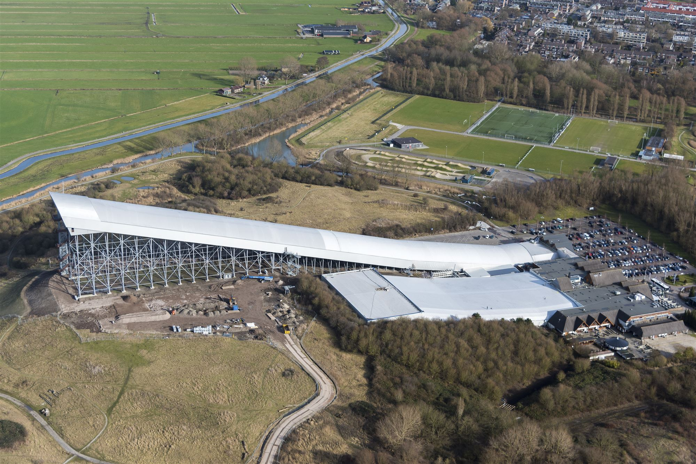
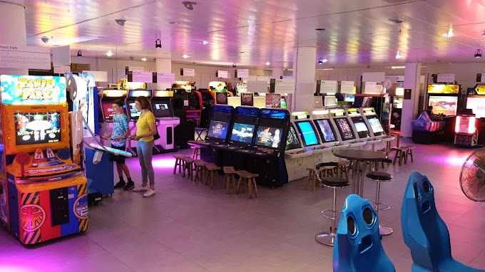

Snowworld Zoetermeer

SnowWorld Zoetermeer werd geopend in december 1996, binnen een jaar nadat begonnen was met de bouw. SnowWorld Zoetermeer was na Skidôme in Rucphen de tweede indoorskibaan met echte sneeuw van Nederland. Er zijn twee pistes met een lengte van 140 meter en één piste met een lengte van 300 meter voor de meer gevorderde skiërs en snowboarders. De eerste twee zijn er al sinds de opening in 1996, de derde piste bestaat sinds december 2003 en is in 2017 verlengd.
Naast de pistes zijn er nog enkele andere faciliteiten, waaronder een après-skigelegenheid, een fondue-restaurant en een zalencomplex voor vergaderingen.
Op 12 november 2013 is het college van de gemeente Zoetermeer akkoord gegaan met de verlenging van de derde baan van SnowWorld. De derde baan heeft een lengte van driehonderd meter en een hoogte van 72,4 meter (68,4 meter boven NAP). De bouw van een geplande vierde baan is niet doorgegaan.
Nationaal Videogame Museum

Het Nationaal Videogame Museum is 'the place to be' voor iedereen die meer wil weten (én beleven) over de geschiedenis, maatschappelijke en culturele kant van videogames. Het museum laat haar bezoekers ook de games van morgen ervaren. Gamers van jong tot oud zijn welkom om te spelen, ontdekken, leren en ervaringen online te delen.
Het museum is in 2008 opgericht door Hasan Tasdemir en Pascal Rappailles en bevond zich aanvankelijk in een garagebox in Den Haag. Toen deze vestiging nagenoeg te klein werd is het meerdere malen verhuisd naar andere locaties in Den Haag. In 2008 verhuisde het museum naar Zoetermeer waar het onderdak vond in een bedrijfspand in Lansinghage. In 2017 verhuisde het museum naar het huidige plek in het Stadshart waar het zijn onderkomen kreeg in het voormalige pand van Vroom & Dreesmann in de passage. In 2021 was er sprake dat het Nationaal Videogame Museum zou verdwijnen uit Zoetermeer. Dit bleek later van de baan te zijn.